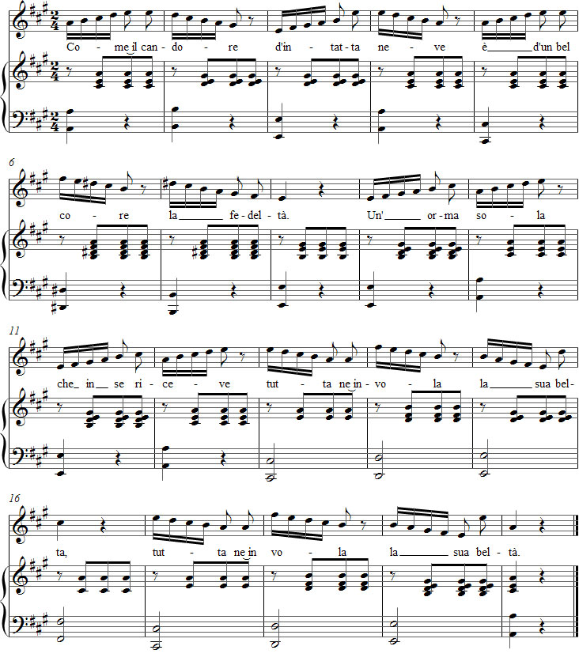

← Takaisin etusivulle
Vaccaj – Harjoitus 7
Valitse ääniala:
Soprano
Mezzo
Alto
Baritoni 1
Baritoni 2
Valitse tempo:
Hidas versio
Nopea versio
Kuuntele äänite
Selaimesi ei tue äänisoitinta.
Nuotit

Exercise 7
[introdu'tsjone 'alle vo'late]
Introduzione alle volate
Introduction to roulades
['kome il kan'dore]
Come il candore
Like the whiteness
[d in'tatta 'neve]
d'intatta neve
of virgin snow
[ɛ dun bɛl 'kore]
è d'un bel core
is a noble heart's
[la fedel'ta]
la fedeltà.
fidelity.
[un 'orma 'sola]
Un' orma sola
A single mark
[ke in se ri'tʃeve]
che in sé riceve,
that it gets
['tutta ne in'vola]
tutta ne invola
will deprive it
[la 'sua bel'ta]
la sua beltà.
of its beauty.
The fidelity of a noble heart is
like the whiteness of virgin snow.
A single mark on it will break its beauty.